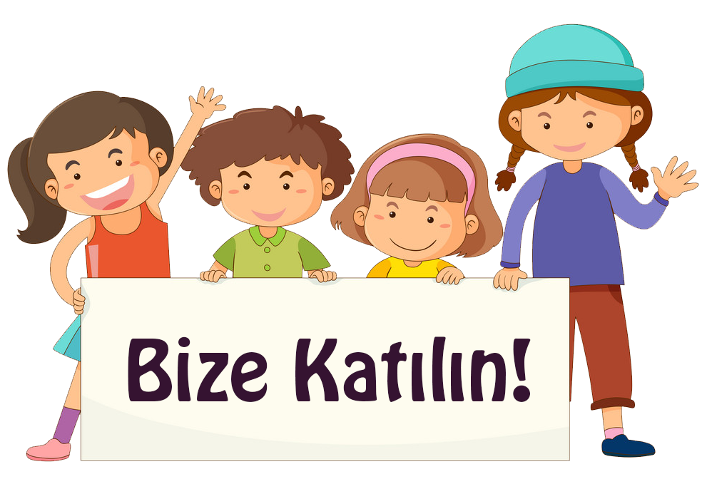

<ion-content fullscreen padding scroll-y="false">
  <ion-slides pager="true" [options]="slideOpts">
    <ion-slide>
      
      <h2><b>İlk Adım</b>'a Hoşgeldiniz!</h2>
      <p class="aciklama"><b>İlk Adım</b> anaokulu uygulaması ile veliler, çocuklarının her türlü bilgilerine anında ulaşabilir, okul servisini takip edebilir, okul duyurularından mobil cihazları üzerinden haberdar olabilir ve öğretmenler tarafından yüklenen resimleri görebilirler.</p>
    </ion-slide>
    <ion-slide>
      
      <h2><b>İlk Adım</b>'a katılın!</h2>
      <p class="aciklama">
        <ion-button expand="full" color="light" routerLink="/signup">Kayıt Ol</ion-button>
      </p>
      <p>Zaten üye misiniz?</p>
      <p class="aciklama">
        <ion-button expand="full" color="light" routerLink="/login">Giriş Yap</ion-button>
      </p>
    </ion-slide>
  </ion-slides>
</ion-content>
